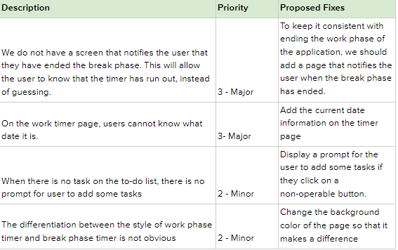

There are many distractions in this day and age, in the form of video games, TV shows, streaming websites, etc. Although distractions can enrich our daily lives, it might also make it hard for people to focus on their job or studies, which leads to procrastination. If you feel like you have not been productive enough due to distractions around you, AN·TIC·I·PATE aims to provide solutions to address these very problems. With AN·TIC·I·PATE, we hope to keep productivity maximized for all our users.
We looked into the different competitors of other solutions to our problem statement to gain a greater sense of the market surrounding devices and applications based around the pomodoro technique. We have split up our competitors into two sections, direct and indirect competitors.
Forest is an app that helps you stay focused on the important things in life. Whenever you want to concentrate, plant a tree in this app and if you access your phone during the time period you are supposed to be focused, the tree will die.
Pomofocus is a customizable timer that is designed around the Pomodoro Technique.
Tomato ToDo, a light and concise focusing software. It can help you focus on learning, make learning plans, set meeting reminders, arrange travel plans, and can also be used to record notes and organize shopping lists.
Noisli allows the user to mix different sounds to create the perfect sound environment to work and relax. Background sounds can help mask noise and improve users’ focus and productivity.
Habit tracking made simple: Done helps you build good habits and quit bad habits by creating healthy routines through setting goals, tracking your progress, and then motivating you with streaks/chains, all in a simple, clean, package.
A simple twist-to-rotate timer that is in the shape of a tomato.
Each member of the team conducted three one-on-one in-person interviews with various individuals. Each interview took around 30 minutes to complete. Our primary goal from these interviews was to understand whether our participants use any time management applications and what sort of activities they did when they were on their breaks.Once we had finished our interviews, we had a team meeting to assemble an affinity diagram and analyze our findings. We highlighted important information from each interview and tried to group them. We went through different grouping processes until we narrowed them down into five main categories with multiple subcategories, resulting in three layers of notes for our data.
1. People like to make a distinction between their work time
and their play time.
Many interviewees noted that they liked to schedule work time
blocks and non-work time blocks. During those work blocks they
would try to be as productive as possible on work and not use
other applications or devices to break focus. However, this also
results quickly in mental fatigue and people will be inclined to
take more breaks to relax themselves.
2. People are exposed to plenty of distractions.
We asked our participants to briefly check and describe their
Screen Time on their phones, and the majority of them happen to
use a lot of social media and entertainment applications, like
Tiktok and Instagram. Social networking introduces plenty of
opportunities for fear of missing out (FOMO), and it leads to
people picking up their devices to check social media more often
than not.
3. People try to utilize the time to its fullest potential.
There were also a number of participants that would meticulously
plan out their day, and review their tasks at the end of the
day. We found that these same people also were more productive
and did not feel tired or stressed at the end of the day because
their schedule was “just right”.
4. People use various tools to aid in time management.
Some interviewees indicated that they have used tools like
calendars, reminders, alarm clock and Notion, a website that
help users organize jobs, to keep themselves on track of their
schedules.
5. People like to start the day by doing something
productive.
We found that most people seemed to power through the day
staying productive if they began the day by first exercising,
doing housework, or simply just planning out their day. One
interviewee said, “Once I start working, it is hard to stop.”
People also tend to complete easy tasks before they start
working on the hard tasks.
6. Technology is more of a hassle than it is a
blessing.
Some of the older participants found it difficult to manage
technology, and preferred time scheduling the manual way -- pen,
paper and post-it notes. Many participants also mentioned that
they have not used a habit tracker before, some of which was
because it was confusing and hard to use.
We created multiple iterations of our application design using Figma. We started with a low fidelity wireframe and gradually made changes to increase the fidelity, while fixing usability issues that we discovered during user and heuristic evaluations.
After creating the wireframes, we each had 2 participants perform several tasks on the wireframes as part of our user evaluation process to find issues. These issues were used to improve the fidelity of the wireframe into a higher-fidelity prototype, as shown below. The tasks the users were asked to perform were a mix of broad reflective tasks and specific goal-oriented tasks:
Based on the findings of the user evaluations, we compiled a list of usability issues, which we then fixed in our wireframe, and used the result to construct our high-fidelity prototype. After that, we individually compiled our own list of usability issues based on the Nielsen Norman Group’s 10 Usability Heuristics for User Interface Design scale from 0-4 and fixed the most important issues for our final prototype.
After extensive user research, ideation, usability testing, and iterations, we aimed to design a system that helps people stay focused while they are working, while guiding them to stay productive while they're taking a break. Our goal can be achieved by implementing the Pomodoro technique, a technique that uses a timer to break down work into intervals, traditionally 25 minutes in length, intervened with short breaks. During the break period, activities will be recommended for users to do with our state-of-the-art recommendation system. The activities can be either defined by users themselves or randomly suggested by our application.
Break down work into intervals of 25 minutes, which are separated by 5 minutes of break.
Our app allows users to create a list of distractions and we will stop users from doing those activities.
Our app also includes features of other traditional time management tools, like calendar, reminder, and alarm clock
As a team, we are proud of how far we have made it in these 11 weeks! We are super excited about being able to think up an idea for a problem that we all have encountered, especially during the past year. We are grateful to have learned a lot, from performing research and writing up documents, to messing with actual design products used in the industry.
Xinyi Hu: I am very thankful to Professor Matt and TAs for helping me so much. I also really appreciate my teammates, randomly assigned by Professor Matt and TAs. Joshua is a great teammate. He always takes the burden as a leader in the first half of the spring quarter. Joshua always comes up with great ideas and thanks for pushing us to finish the homework as early as possible. Yin-Jui is an excellent teammate, who teaches me a lot during the spring quarter. He is my best friend now. Finally, I still want to thank Professor for connecting us magically.
Joshua Kuan: I enjoyed the lectures and interesting topics discussed in class. I liked that the information was continuously curated for us, especially towards the end. Also would like to say thank you to my teammates for being able to carry on working around my weird schedule because of my part time job
Yin-Jui Liao: I would like to say thank you to Professor Matt for the hard work you put into this course and the TAs for providing all the help we need. During the quarter, we learned a lot as a team through the process of building an interesting project from scratch. Seeing our project getting better after interviews, user evaluations, and self-heuristic evaluations gives me a great sense of achievement. Finally, thanks to my teammates for being collaborative and supportive and all the participants of our interviews and evaluations. With your help, our project gets to improve over time.